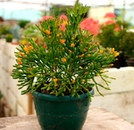

Декоративно-лиственные
Среди комнатных декоративно-лиственных растений безусловными фаворитами являются антуриум, колеус, диффенбахия, аглаонема, монстера, кордилина, фатсия, плющ, шеффлера, фиттония. Комнатные декоративно-лиственные растения, имеющие оригинальную форму листа и/или его окраску различных оттенков, способны предложить поразительно богатый набор весьма привлекательных и разнообразных акцентов для оформления самых разных интерьеров - как офисных, так и домашних.
Декоративно-цветущие
Эта наиболее обширная группа комнатных растений по праву считается наиболее ценной для выращивания в комнатах. Некоторые растения образуют ягоды и фрукты. Растения цветут в различные периоды года, некоторые - круглый год. Продолжительность цветения каждого вида колеблется от нескольких дней до нескольких месяцев. Среди множества цветущих растений встречаются однолетние, увядающие после первого цветения.
Орхидеи
Орхидея – прекрасное растение на тонком стебельке, увенчанное цветами восхитительной окраски, относящееся к семейству орхидных. Оно довольно популярно среди любителей комнатных растений. Цветоводов оно привлекает нежностью и красотой, но немного пугает непростым содержанием.
Пальмы
Комнатные пальмы создают экзотический колорит в интерьере, вносят в дом частичку теплых тропиков. Для хозяев пальма в доме является предметом гордости и символом достатка. Эти великолепные декоративно лиственные растения отлично подходят для выращивания в зимних садах, часто пальмами украшают холл, просторный зал или офис
Кактусы и суккуленты
Суккуленты очень хорошо приспособлены к засухе. Эти мясистые растения действительно могут сохранять воду в листьях, стебле и корнях.
Кактусы относятся к сочным растениям, содержащим воду в тканях, благодаря которой они могут выдерживать длинные периоды засухи.
